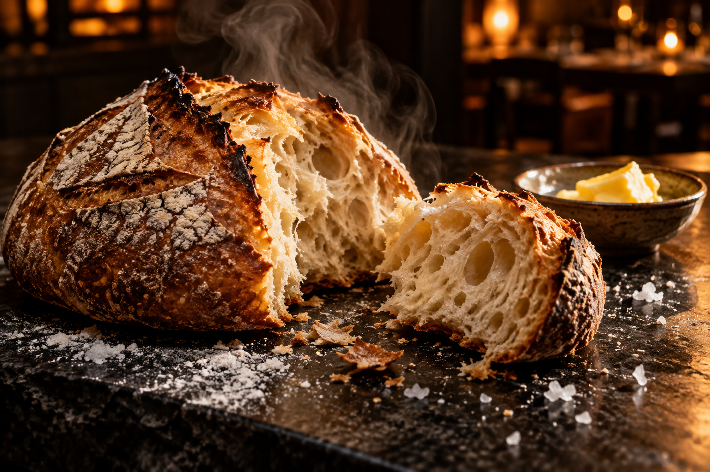

Хорошему вечеру не нужен повод
По хлебу.
По любви.
Хрустящая корочка, открытый огонь
и ещё один разговор за столом.
ЗАКВАСКА / ОГОНЬ / СЕЗОНЗадержитесь на минуту ↓
Просто.
Не обыкновенно.
Начинаем с продукта. Печём хлеб, запекаем корнеплоды, оставляем вкусам место. Меню меняется вместе с сезоном.
Меню, состав и аллергены ↗02 / СОБРАТЬСЯ ВМЕСТЕ
Один стол.
Несколько хороших историй.
Выбрать время ↗Демонстрационная форма: можно проверить поля, но настоящий стол не резервируется.